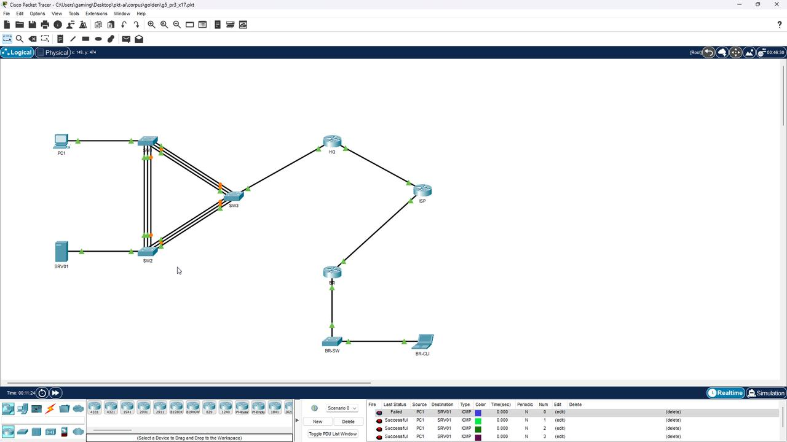
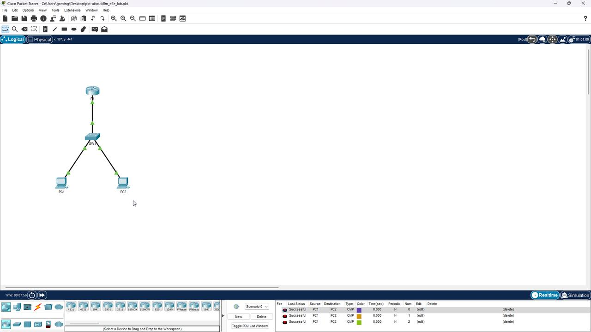
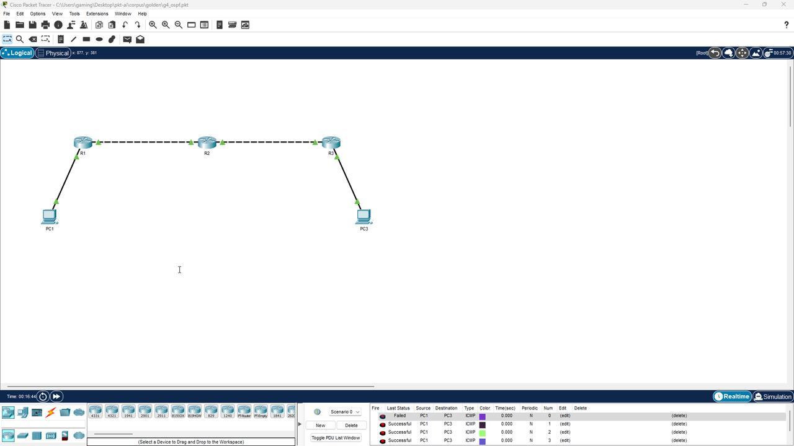

pkt-ai — нейросеть собирает схемы Cisco Packet Tracer
Итоги проекта · 2026-11-03 · всё проверено вживую в Packet Tracer 8.0.0.0212
Что получилось — одной фразой
Даёшь текст задания (как из методички) — получаешь готовый .pkt, который открывается в Packet Tracer, и пинги ходят. Проверено скриншотами ниже. Работает через любую нейросеть по API, через MCP (Claude) и руками через CLI.
Как это устроено
текст задания / фото
→
LLM
IR-JSON
IR-JSON
→
Валидатор
порты·IP·VLAN·связность
порты·IP·VLAN·связность
→
Builder
клонирование из донора
клонирование из донора
→
Крипто
Twofish-EAX
Twofish-EAX
→
.pkt
Нейросеть никогда не пишет XML — только простое JSON-описание. XML собирает
детерминированный сборщик из реальных записей донора (файл гарантированно открывается).
Ошибки валидации автоматически возвращаются нейросети на исправление (repair-loop, до 3 итераций).
Живые доказательства (скриншоты из PT 8.0)
| Лаба | Проверка | Результат |
|---|---|---|
| g1 — LAN через свитч | PC1→PC2 | Successful 3/3 |
| g2 — VLAN + trunk (router-on-a-stick) | PC-A→PC-B, меж-VLAN | Successful (1-й ARP) |
| g3 — 2 роутера, статическая маршрутизация | PC1→PC2 через транзит | Successful |
| g4 — 3 роутера, OSPF | PC1→PC3 | Successful 3/4 |
| g5 — ПР№3 x17 (PAgP/LACP, VLAN 100/200/300, IPv6, AAA/SSH) | PC1→SRV01, меж-VLAN | Successful 3/4 |
| llm_e2e_lab — собрана НЕЙРОСЕТЬЮ из текста задания | PC1→PC2 | Successful 3/3 |
g5 (ПР№3) — меж-VLAN пинг

Лаба, собранная нейросетью — Successful

g4 OSPF

За одну ночь найдено и починено (дневник отладки через GUI-автоматизацию)
- Наследование мусора донора — свитч получал чужие VLAN → связность рвана. Фикс: чистые конфиг + VLAN-база.
- POWER=false у роутеров в донорах — PT не поднимает такие порты конфигом. Фикс: нормализация питания портов.
- PT-пересохранённые доноры теряют привязку EtherChannel — g5 переэкспортирован из оригинала.
- ГЛАВНОЕ: DHCP-карта донора (ENGINE/DHCP_CLIENT/PORT_DATA_MAP) — запись FastEthernet0 заставляла PT включать DHCP на хостах, игнорируя статический IP → все хосты сидели на APIPA во всех файлах, включая ваш ПР№3. Фикс: карта чистится при сборке. Найдено через GUI-бисекцию прямо в PT 8.0.
- Порты хостов от LLM («FastEthernet0/0» вместо «FastEthernet0») — реестр имён исправлен, сборщик нормализует, валидатор ловит, repair-loop чинит. Проверено: PT открыл LLM-лабу после фикса.
Скорость и надёжность
- Криптоядро: XOR-стейджи и CTR переведены на C-уровневые операции (big-int) + кеш keystream — расшифровка 758 КБ за 0.08 с, побайтовая идентичность подтверждена кросс-проверкой с независимым TS-ядром.
- Реестр 140 моделей устройств из корпуса 286 файлов; правила именования портов подтверждены корпусом (0 расхождений).
- Симулятор связности проверяет пинги до отдачи файла: L2 (VLAN/trunk/EtherChannel), L3, DHCP-карта, POWER.
- Тесты: крипто 6/6, API E2E 12/12, золотые лабы 5/5, LLM E2E 2/2 (включая repair-loop).
Как пользоваться
cd C:\Users\gaming\Desktop\pkt-ai\service
set OPENAI_API_KEY=… # любой OpenAI-совместимый API
set OPENAI_BASE_URL=https://plusvibeapi.ru/v1
set OPENAI_MODEL=deepseek-v4-flash-0731:free
python -m uvicorn app:app --port 8317 # Swagger: /docs
POST /api/v1/labs {"task": "текст задания"} → готовый .pkt в out\
Полная инструкция: docs/USAGE.md · приёмка: docs/ACCEPTANCE.md · план: PLAN.md
Репозиторий: C:\Users\gaming\Desktop\pkt-ai · тег v0.2.0 · 7 коммитов